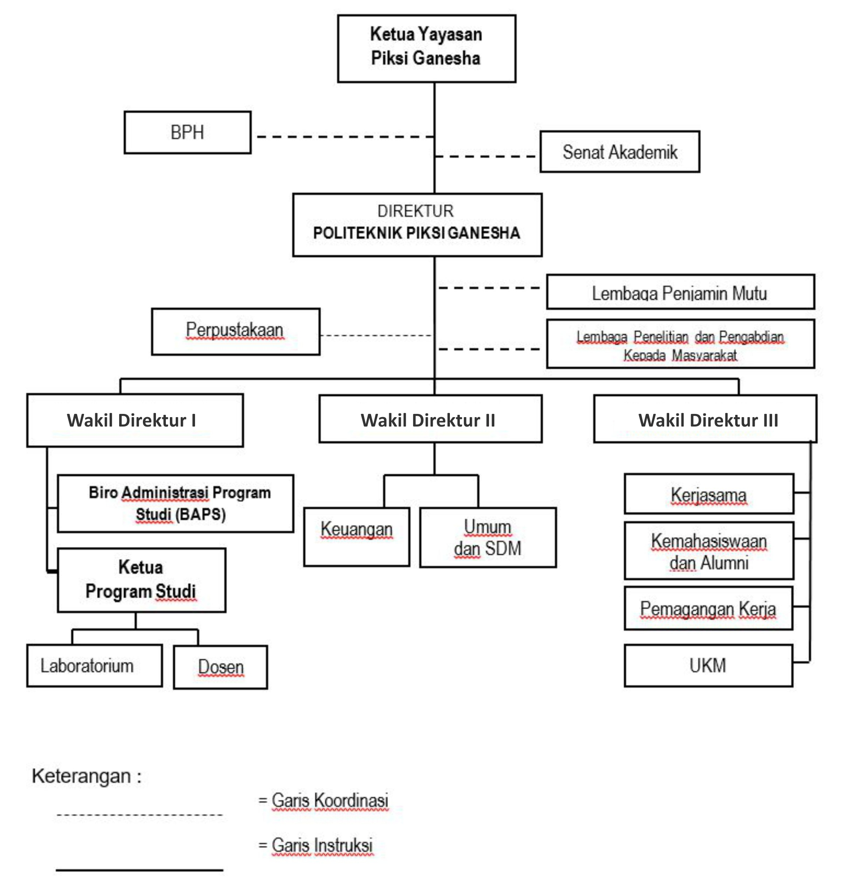
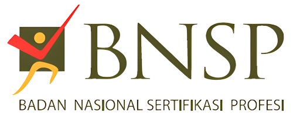
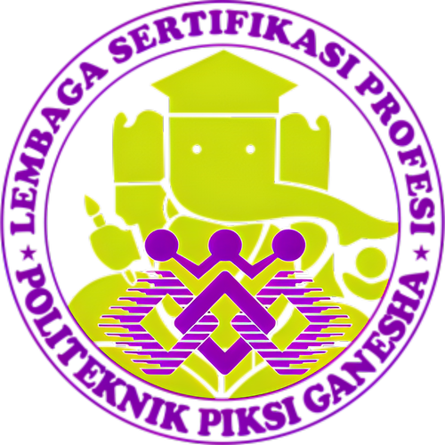
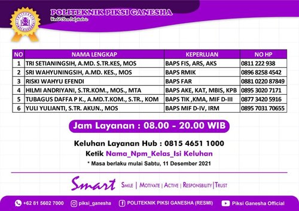

PROFILE POLITEKNIK PIKSI GANESHA BANDUNG

POLITEKNIK PIKSI GANESHA BANDUNG
Politeknik Piksi Ganesha Bandung atau Kampus Ungu, adalah perguruan tinggi swasta yang terdapat di kota Bandung, Jawa Barat, Indonesia. Politeknik Piksi Ganesha Bandung berafiliasi dengan Politeknik Dharma Patria Kebumen.
Politeknik Piksi Ganesha Bandung memiliki fasilitas penunjang yang lengkap untuk mahasiswanya, semua ruangan yang meliputi kelas, laboratorium dan perpustakaan menggunakan (Air Conditioner) atau Penyejuk udara dan menggunakan alat pemantau Televisi sirkuit tertutup.
Temukan kami:


Visi & Misi Politeknik Piksi Ganesha Bandung
Visi
Menjadi perguruan tinggi vokasi unggulan yang mampu menciptakan sumber daya manusia profesional di Indonesia pada tahun 2025.
Misi
- Menyelenggarakan pendidikan yang unggul dan profesional berbasis skills (keterampilan) sesuai dengan kebutuhan dan tuntutan dunia usaha serta industri melalui uji kompetensi dan sertifikasi berstandar nasional maupun internasional.
- Menyelenggarakan sistem pendidikan yang unggul dan profesional mengacu pada KKNI (Kerangka Kualifikasi Nasional Indonesia).
- Menyelenggarakan penelitian dan pengabdian kepada masyarakat yang unggul dan profesional, menjunjung tinggi karakter dan wawasan nilai-nilai luhur bangsa.
- Menyelenggarakan kemitraan dan kerjasama yang unggul dan profesional dengan dunia usaha dan industri bebasis link and match baik dalam maupun luar negeri.
Struktur Kepemimpinan
Pimpinan
Kunjungi Kami
Kampus A - Fakultas Ekonomi dan Bisnis
Jl. Gatot Subroto No.301, Maleer, Kec. Batununggal, Kota Bandung, Jawa Barat 40274
piksiganeshaonline@gmail.com
(022) 87340030
Kampus B [Fakultas Kesehatan] dan Kampus C [Fakultas IT]
Jl. Gatot Subroto No.335, Gumuruh, Kec. Batununggal, Kota Bandung, Jawa Barat 40274
piksiganeshaonline@gmail.com
(022) 87340030
SERTIFIKASI POLITEKNIK PIKSI GANESHA BANDUNG
Sertifikasi (Nasional - Internasional)
Semua lulusan Politeknik Piksi Ganesha dibekali dengan sertifikat bersekala Nasional dan Internasional karena bagi perusahaan sampai sekarang sertifikasi menjadi sangat penting, ini menjadi bukti bahwa Anda benar-benar mempunyai kemampuan dalam mengoperasikan komputer. Dengan pertimbangan tersebut Politeknik Piksi Ganesha telah memiliki program sertifikasi Nasional dan Internasional, diantaranya :
SERTIFIKASI MICROSOFT
Sertifikasi Internasional keahlian bidang Microsoft Office bertujuan untuk memberikan bekal di lapangan tentang pengolahan dokumen, perhitungan dalam dokumen tabel, dan perancangan presentasi.
SERTIFIKASI BNSP
BNSP merupakan badan independen yang bertanggung jawab kepada Presiden yang memiliki kewenangan sebagai otoritas sertifikasi personil dan bertugas melaksanakan sertifikasi kompetensi profesi bagi tenaga kerja.
SERTIFIKASI LSP
Lembaga Sertifikasi Profesi Politeknik Piksi Ganesha adalah suatu lembaga yang dibentuk untuk menjalankan fungsi utama BNSP dalam melaksanakan uji kompetensi yang diakhiri dengan pemberian sertifikat kompetensi bagi mahasiswa yang dinyatakan kompeten.
PROGRAM STUDI POLITEKNIK PIKSI GANESHA BANDUNG
FAKULTAS - PROGRAM STUDI
Politeknik Piksi Ganesha Bandung memiliki 3 fakultas, yakni: Fakultas Ekonomi dan Bisnis, IT dan Komputer, dan Fakultas Kesehatan. Berikut program studi yang ada di Politeknik Piksi Ganesha Bandung.
ADMINISTRASI KEUANGAN (AKE) - D3
(Terakreditasi “A”)
Ketua Program Studi : EUIS HERNAWATI, S.E., M.M.
Sekretaris Program Studi : DIAN CANDRA FATIHAH, S.P., M.M
Visi
Menjadi program studi unggulan dalam menghasilkan sumber daya manusia yang profesional dalam bidang administrasi keuangan di Indonesia pada tahun 2025.
Misi
- Menyelenggarakan pendidikan berbasis kompetensi dalam bidang administrasi, akuntansi dan keuangan sesuai dengan Standar Kerangka Kualifaikasi Nasional Indonesia (SKKNI).
- Melakukan penelitian dan pengabdian masyarakat yang bermanfaat dan relevan dengan bidang administrasi keuangan.
- Menjalin kerjasama dengan dunia usaha dan dunia industri dalam pemenuhan kebutuhan kerja dalam bidang admininistrasi keuangan.
KOMPUTERISASI AKUNTANSI (KAT) - D4
(Terakreditasi “A”)
Ketua Program Studi : PERWITO, S.E., M.M
Sekretaris Program Studi : KARYADI, S.E., M.M
Visi
Menjadi Program Studi Unggulan yang menghasilkan Sumber Daya Manusia Profesional dalam bidang Komputerisasi Akuntansi di Indonesia pada Tahun 2025.
Misi
- Menyelenggarakan proses pembelajaran yang berkualitas dan terfokus pada pengelolaan akutansi keuangan, sistem informasi akuntansi, dan perancagan sistem informasi akuntansi.
- Menyelenggarakan Penelitian dan Pengabdian Pada Masyarakat yang selaras dengan keahlian akuntasi keuangan, perancangan dan pengembangan sistem informasi akuntansi.
- Memberikan bekal ilmu yang berkaitan dengan etika profesi dan jiwa technopreneurship.
- Melakukan kerjasama dengan institusi dan industri dalam dan luar negeri dalam bidang pendidikan dan penelitian.
BISNIS DIGITAL (BDI) - D4
Visi
Menjadi program studi dalam pengembangan teknik produksi platform media digital berbasis entrepreneurship di Indonesia pada tahun 2030.
Misi
- Menyelenggarakan pendidikan bidang komputerisasi akuntansi yang berkualitas dan fokus pada bidang Techno-Preneurship berbasis Digital.
- Menyelenggarakan penelitian dan pengabdian pada masyarakat yang bermanfaat dan relevan dengan bidang Techno-Preneurship berbasis Digital.
- Menjalin kemitraan dan kerjasama dengan institusi dan industri jasa dan manufaktur dalam penguatan lulusan yang profesional di Indonesia.
MANAJEMEN INFORMATIKA (MIF) - D3
(Terakreditasi “B”)
Ketua Program Studi : RINI TISNAWATI, S.KOM., M.T., MTA
Sekretaris Program Studi : ARDI TARYANTO, S.SI., M.M
Visi
Menjadi program studi yang mampu menghasilkan sumber daya manusia yang profesional dalam informatika di Indonesia pada tahun 2025.
Misi
- Menyelenggarakan pendidikan yang berkualitas di bidang informatika sesuai dengan Standar Kerangka Kualifikasi Nasional Indonesia (SKKNI).
- Menyelenggarakan penelitian dan pengabdian pada masyarakat yang bermanfaat dan relevan dengan bidang informatika.
- Menjalin kerjasama dengan dunia usaha dan industri di bidang informatika baik regional maupun nasional.
TEKNIK KOMPUTER (TIK) - D3
(Terakreditasi “B”)
Ketua Program Studi : SELIWATI, S.KOM., M.KOM
Sekretaris Program Studi : ARDELIA ASTRIANY R, S.PD., M.M
Visi
Menjadi program studi yang menghasilkan lulusan profesional di bidang teknik komputer sesuai dengan kebutuhan industri di Indonesia pada tahun 2025.
Misi
- Menyelenggarakan pendidikan yang berkualitas di bidang teknik komputer sesuai dengan Standar Kerangka Kualifikasi Nasional Indonesia (SKKNI).
- Melaksanakan penelitian dan pengabdian masyarakat yang bermanfaat dan relevan dengan bidang teknik komputer.
- Menjalin kerjasama dengan dunia usaha dan industri di bidang teknik komputer
Tujuan Prodi Teknik Komputer
Untuk mendukung visi dan misi Prodi Teknik Komputer, perlu dilakukannya beberapa tujuan yaitu :
- Menghasilkan lulusan yang memiliki kompetensi di bidang mekatronika berbasis teknik komputer sesuai dengan KKNI.
- Menghasilkan lulusan yang mampu merancang, membangun, dan mengimplementasikan teknologi komputer sesuai dengan perkembangan teknologi industri dan berguna di masyarakat.
- Menghasilkan lulusan yang dapat memanfaatkan dan mengembangkan keilmuan yang berguna bagi masyarakat.
- Menghasilkan karya ilmiah di bidang mekatronika berbasis teknik komputer yang bermanfaat bagi masyarakat sesuai dengan kemajuan Ilmu Pengetahuan dan Teknologi.
- Menghasilkan lulusan yang siap bekerja di dunia usaha dan industri di bidang teknologi komputer.
PRODUKSI MEDIA (PME) - D4
Visi
Menjadi program studi dalam pengembangan teknik produksi platform media digital berbasis entrepreneurship di Indonesia pada tahun 2030.
Misi
- Menyelenggarakan pendidikan bidang manajemen produksi media berbasis digital yang berkualitas dan profesional.
- Melaksanakan penelitian dan pengabdian pada masyarakat yang bermanfaat dan relevan dengan bidang produksi media berbasis digital.
- Menjalin kemitraan dan kerjasama penguatan pendidikan dan lulusan dalam bidang bidang produksi media berbasis digital.
MANAJEMEN INFORMATIKA (MIF) - D4
(Terakreditasi “B”)
Ketua Program Studi : RINI SUWARTIKA KUSUMADIARTI, S.KOM., M.KOM., MTA
Sekretaris Program Studi : RINA KURNIAWATI, S.KOM., M.T., MTA
Visi
Menjadi program studi yang mampu menghasilkan sumber daya manusia yang profesional dalam bidang Manajemen Sistem Informasi di Indonesia pada tahun 2025.
Misi
- Menyelenggarakan pendidikan yang berkualitas di bidang Manajemen Sistem Informasi berbasis Desktop dan Web sesuai dengan Standar Kerangka Kualifikasi Nasional Indonesia (SKKNI).
- Melaksanakan penelitian dan pengabdian pada masyarakat yang bermanfaat dan relevan dengan bidang manajemen sistem informasi.
- Menjalin kemitraan dan kerjasama dengan dunia usaha dan industri dalam bidang Manajemen Sistem Informasi untuk penguatan lulusan.
ANALISIS KESEHATAN (AKS) - D3
(Terakreditasi “B”)
Ketua Program Studi : AGUS SUDRAJAT, S.SI., M.T
Sekertaris Program Studi : ANDINI KUSDIANTINI, S.SI., M.SI
Visi
Menjadi Program Studi yang Mampu Menghasilkan Lulusan Tenaga Laboratorium Medik Yang Kompeten dan Professional khususnya Parasitologi Klinik Penyakit Tropis di Indonesia pada Tahun 2025.
Misi
- Menyelenggarakan pendidikan berkualitas di bidang Teknologi Laboratorium Medik sesuai dengan Standar Kerangka Kualifikasi Nasional Indonesia (SKKNI).
- Memberikan pembekalan uji kompetensi dalam bidang Teknologi Laboratorium Medik sesuai kebutuhan profesi.
- Melaksanakan penelitian dan pengabdian pada masyarakat yang bermanfaat dan relevan dalam bidang analis kesehatan dan parasitologi klinik penyakit tropis.
- Menjalin kemitraan dan kerjasama dengan sarana pelayanan kesehatan dalam pemenuhan kebutuhan tenaga Teknisi Laboratorium Medik di Indonesia.
FARMASI (FAR) - D3
(Terakreditasi “C”)
Ketua Program Studi : APT. MEITI ROSMIATI, S.SI., M.FARM
Sekretaris Program Studi : APT. KARTIKA SARI, S.FARM., M.FARM
Visi
Menjadi program studi farmasi unggulan yang menghasilkan tenaga teknis kefarmasian yang profesional di Indonesia pada tahun 2025.
Misi
- Menyelenggarakan pendidikan vokasi bidang farmasi sesuai dengan Standar Kerangkan Kualifikasi Nasional Indonesia (SKKNI) dan Kurikulum Nasional dari Kementerian Kesehatan Republik Indonesia.
- Memberikan uji kompetensi dari APDFI (Asosiasi Perguruan Diploma Farmasi Indonesia) dan PAFI (Persatuan Ahli Farmasi Indonesia).
- Melaksanakan penelitian dan pengabdian pada masyarakat yang bermnfaat dan relevan dengan bidang teknis tenaga kefarmasian.
- Menjalin kemitraan dan kerjasama dengan sarana pelayanan kesehatan dan industri farmasi serta lembaga profesi dalam bidang teknis kefarmasian.
FISIOTERAPI (FIS) - D3
(Terakreditasi “C”)
Ketua Program Studi : IKA RAHMAN, S.FIS., M.KM
Sekretaris Program Studi : WIWIK RAHAYU, S.FIS
Visi
Menjadi program studi unggulan yang mampu menghasilkan Sumber Daya Manusia Profesional dalam bidang Fisioterapi Wellness di Indonesia pada tahun 2025.
Misi
- Menyelenggarakan pendidikan fisioterapi wellness yang berkualitas sesuai dengan Standar Kompetensi Kerja Nasional Indonesia (SKKNI) No. 149 Tahun 2018.
- Melaksanakan penelitian dan pengabdian kepada masyarakat yang bermanfaat dan relevan dengan bidang Fisioterapi Wellness.
- Menjalin kemitraan dan kerjasama dengan industri jasa pelayanan kesehatan khususnya dalam bidang Fisioterapi
MANAJEMEN PELAYANAN RUMAH SAKIT (MPRS) - D3
(Terakreditasi “B”)
Ketua Program Studi : NURUL DWI ARIANI, S.KEP., M.HKES
Sekretaris Program Studi : SANI FITRIYANI, AMD., ARS., S.KM., M.MRS
Visi
Menjadi program studi yang menghasilkan sumber daya manusia profesional di bidang Manajemen Pelayanan Rumah Sakit yang mampu berdaya saing di Indonesia pada tahun 2025.
Misi
- Menyelenggarakan pendidikan dalam bidang manajamen pelayanan rumah sakit yang berkualitas sesuai dengan Standar Kualifikasi Nasional Indonesia (SKKNI).
- Melaksanakan penelitian dan pengabdian pada masyarakat yang bermanfaat dan relevan dengan bidang manajemen pelayanan rumah sakit.
- Menjalin kemitraan dan kerjasama dengan sarana pelayanan kesehatan dan dunia profesi kesehatan dalam bidang manajemen pelayanan rumah sakit di Indonesia.
REKAM MEDIS DAN INFORMASI KESEHATAN (RMIK) - D3
(Terakreditasi “A”)
Ketua Program Studi : IRDA SARI, S.ST., M.M
Sekretaris Program Studi : ANNISA ULFAH, S.TR. KES., M.M
Visi
Menjadi program studi unggulan yang mampu menghasilkan sumber daya manusia yang profesional dalam bidang Rekam Medis dan Informasi Kesehatan di Indonesia pada tahun 2025.
Misi
- Menyelenggarakan pendidikan dalam bidang Rekam Medis dan Informasi Kesehatan sesuai Standar Kerangka Kualifikasi Nasional Indonesia (SKKNI).
- Memberikan ilmu dan pembekalan tentang pengelolaan administrasi rekam medis, clinical coder (pengkode klinis) yang kompeten.
- Melaksanakan penelitian dan pengabdian kepada masyarakat yang bermanfaat dan relevan dengan bidang Rekam Medis dan Informasi Kesehatan.
- Menjalin kemitraan dan kerja sama dengan sarana pelayanan kesehatan dan lembaga profesi di bidang Rekam Medis dan Informasi Kesehatan untuk penguatan kualitas lulusan.
MANAJEMEN INFORMASI KESEHATAN (MIK) - D4
Ketua Program Studi : YUDA SYAHIDIN, S.ST., M.KOM., MTA., CPDSA.
Sekretaris Program Studi : YUYUN YUNENGSIH, S.ST., M.M
Visi
Menjadi program studi unggulan di Indonesia dalam Pengolahan Data Rekam Medis Berbasis Teknologi Informasi Guna Mendukung Tata Kelola Klinis Yang Baik (Good Clinical Governance) untuk Pengambilan Keputusan Yang Benar, Cepat, Tepat dan Akurat
Misi
- Menyelenggarakan pendidikan Sarjana Terapan Manajemen Informasi Kesehatan sesuai Standar Kerangka Kualifikasi Nasional Indonesia (SKKNI) dan profesi rekam medis berbasis teknologi informasi kesehatan.
- Melaksanakan penelitian dan pengabdian pada masyarakat yang berdayaguna dalam bidang manajemen informasi kesehatan dengan tata kelola klinik yang baik (good clinical governance).
- Menjalin kemitraan dan kerjasama dengan sarana pelayanan kesehatan dalam peningkatan mutu pendidikan dan pengguna lulusan sarjana terapan manajemen informasi kesehatan.
INFORMASI LAINNYA POLITEKNIK PIKSI GANESHA BANDUNG
Berikut informasi lainnya dari Politeknik Piksi Ganesha yang bisa tersampaikan, berdasarkan akses informasi laman resmi Politeknik Piksi Ganesha Bandung.
INFORMASI DOSEN
Butuh informasi tentang Dosen, mampir kesini!
KURIKULUM
Mahasiswa Fakultas Ekonomi dan Bisnis? mampir kesini!
Mahasiswa Fakultas IT dan Komputer? mampir kesini!
Mahasiswa Fakultas Kesehatan? mampir kesini!
KALENDER AKADEMIK
Butuh informasi kalender akademik? mampir kesini!
INFORMASI BAPS
Bagi mahasiswa yang mengalami kendala dapat menghubungi Admin BAPS berikut:
Atau bisa berkunjung, kesini!
PEDOMAN
Informasi tentang Pedoman, dapat diakses disini!
NILAI ONLINE
Informasi nilai mahasiswa, dapat diakses disini!